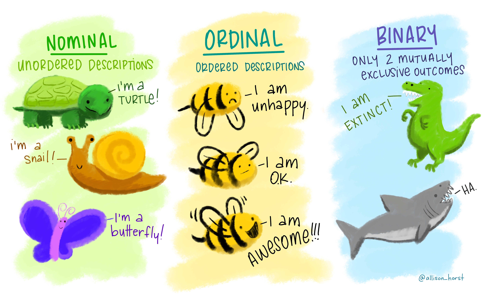
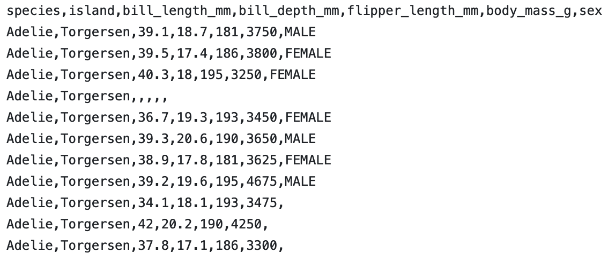
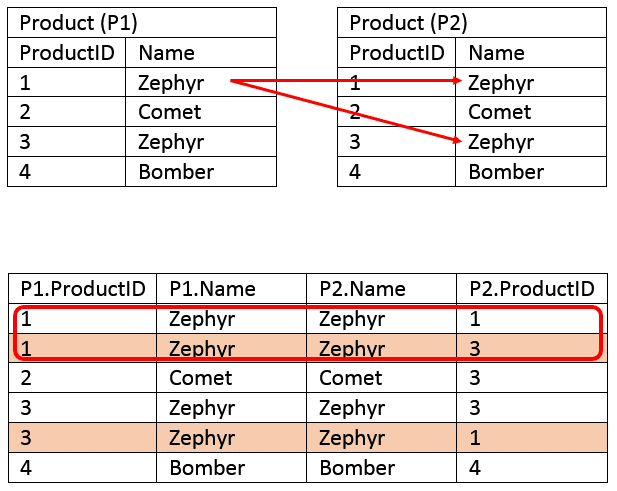

PSTAT 188: Introduction to Data Science
Mike Ludkovski (based on materials by Trevor Ruiz)
2025-08-14
Plan for Today: Tidy Data
Data Science Lifecycle
Working with tabular data
Data visualization
History of Data Science
Data science emerged as a term of art in the last decade
Interest exploded in the last five years
Origins: ‘data analysis’: In 1960s Tukey advocated for ‘data analysis’ as a broader field than statistics:
statistical theory and methodology;
visualization and data display techniques;
computation and scalability;
breadth of application.
Tukey’s ‘data analysis’ is proto-modern data science. In the 1960’s and 1970’s:
visualization meant drawing
computation meant data re-expression by hand
Confirmatory approach
The “confirmatory” approach of the classical inferential framework.
statistical model determined by experimental design
analysis based on statistical theory.
output is a decision
Early data analysis concepts
The new techniques allowed for iterative investigation:
formulate a question
examine data graphics and summaries
adjust computations and graphics to hone in on content of interest
refine the question
From 1960-2010, adopters of the ‘data analysis as a field’ view were largely industry practitioners. Their ideas evolved into an alternative approach to working with data:
data-driven rather than theory-driven;
iterative rather than conclusive.
In the meantime, computer scientists advanced the field of machine learning
Exploratory approach
Iterative problem solving together with applied machine learning was codified in an academic discipline only in the 21st century
The “exploratory” approach of iterative modern data analysis.
outputs are findings
statistical model determined by data
analysis techniques include empirical methods
Drivers of change
In the 2000s and especially after 2010, the iterative approach enjoys broader applicability than it used to:
due to automated and/or scalable data collection
observational data is widely available across domains
and includes large numbers of variables
highly specialized data problems evade methodology with theoretical support
more accessible to analysts without advanced statistical training
Machine learning advanced modern predictive modeling, most notably in the past 15 years:
neural networks and deep learning
optimization
algorithmic analysis
What is research?
Research is systematic investigation undertaken in order to establish or discover facts.
What are facts in data science?
method M outperforms method M’ at task T
we analyzed data D and reached the conclusion that…
The research landscape:
Formal communities – i.e., journals, departments, conferences – are still coalescing around data science research.
Relevant research largely occurs in statistics, computer science, and application domains, and can be divided broadly into:
methodology – creating new techniques to analyze data
applications – applying existing methods to generate new findings
Methodological vs Applied research
Methodological research might involve:
designing a faster algorithm for solving a particular problem
proposing a new technique for analyzing a particular type of data
generalizing a technique to a broader range of problems
Applied research might involve:
analyzing a specific dataset or producing a novel analysis of existing data
creating ad-hoc methods for a domain-specific problem
importing methodology from another area to bear on a domain-specific problem
What is data?
Data can be any unprocessed fact, value, text, sound file, image, video,..
Examples:
- your homework files
- photos
- each click on a website
- each transation at your bank, credit card, grocery store
Types of Statistical Data
Type of data determines the analysis or models you can use
Quantitative or numeric: Numeric information
- Example: height, weight, age, GPA
- can use math functions eg. average, max, min, sum
- not everything represented by a number is a quantitative/numeric variable
- Zipcode, StudentID
Qualitative or categorical: descriptions (usually words)
- Example: Eye color, state of residence,
- can’t use math functions
- categorical variables have levels
Types of Numerical data
- Discrete : data that can be counted and therefore can take on only certain values
- eg. shoe size, number of questions answered correctly
- Continuous : data that is measured on an infinite scale
- eg. Height, weight, temperature

Types of Categorical data
- Ordinal : data that can be ordered or data on a scale
- eg. income (low, medium, high)
- Nominal : data with no apparent order to it
- e.g. gender

Practice: Identify the type of data
- Age : 12, 13, 17 years old
- Spice level: mild, medium, hot
- Temperature: 77.5 , 80.2, 73
- Eye color: green, blue, brown, black
Structure or format of data
What is a dataset?
A dataset is any collection of data
Typically, a dataset contains data in tabular form:
- Variables across the columns
- Observations or data points down the rows
In Python, a good intution is that datasets are dictionaries
What does data look like ? Where is the dataset?
- generally a .csv file

Load a data frame
- A .csv file can be loaded as a data frame.

Penguins
Structuring Data
- Tabular data
- Many ways to structure a dataset
- Rows and columns
- Tidy data: matching semantics with structure
- Data semantics: observations and variables
- The tidy standard
- Transforming data frames
- Subsetting (slicing and filtering)
- Derived variables
- Aggregation and summary statistics
Tabular data
- Many possible layouts for tabular data
- ‘Real’ datasets have few organizational constraints
Most data are stored in tables, but there are always multiple possible tabular layouts for the same underlying data.
Mammal data: long layouts
Below is the Allison 1976 mammal brain-body weight dataset shown in two ‘long’ layouts:
| body_wt | brain_wt | |
|---|---|---|
| species | ||
| Africanelephant | 6654.0 | 5712.0 |
| Africangiantpouchedrat | 1.0 | 6.6 |
| measurement | weight | |
|---|---|---|
| species | ||
| Africanelephant | brain_wt | 5712.0 |
| Africanelephant | body_wt | 6654.0 |
| Africangiantpouchedrat | brain_wt | 6.6 |
| Africangiantpouchedrat | body_wt | 1.0 |
Mammal data: wide layout
Here’s a third possible layout for the mammal brain-body weight data:
| species | Africanelephant | Africangiantpouchedrat | ArcticFox | Arcticgroundsquirrel |
|---|---|---|---|---|
| measurement | ||||
| body_wt | 6654.0 | 1.0 | 3.385 | 0.92 |
| brain_wt | 5712.0 | 6.6 | 44.500 | 5.70 |
GDP growth data: wide layout
Here’s another example: World Bank data on annual GDP growth for 264 countries from 1961 – 2019.
| Country Name | Country Code | 2009 | 2010 | 2011 | |
|---|---|---|---|---|---|
| 0 | Aruba | ABW | -10.519749 | -3.685029 | 3.446055 |
| 1 | Afghanistan | AFG | 21.390528 | 14.362441 | 0.426355 |
| 2 | Angola | AGO | 0.858713 | 4.403933 | 3.471976 |
| 3 | Albania | ALB | 3.350067 | 3.706892 | 2.545322 |
| 4 | Andorra | AND | -5.302847 | -1.974958 | -0.008070 |
GDP growth data: long layout
Here’s an alternative layout for the annual GDP growth data:
| year | growth_pct | |
|---|---|---|
| Country Name | ||
| Afghanistan | 2009 | 21.390528 |
| Aruba | 2009 | -10.519749 |
| Afghanistan | 2010 | 14.362441 |
| Aruba | 2010 | -3.685029 |
| Afghanistan | 2011 | 0.426355 |
| Aruba | 2011 | 3.446055 |
SB weather data: long layouts
A third example: daily minimum and maximum temperatures recorded at Santa Barbara Municipal Airport from January 2021 through March 2021.
| STATION | TMAX | TMIN | MONTH | DAY | YEAR | |
|---|---|---|---|---|---|---|
| 0 | USW00023190 | 65 | 37 | 1 | 1 | 2021 |
| 1 | USW00023190 | 62 | 38 | 1 | 2 | 2021 |
| 2 | USW00023190 | 60 | 42 | 1 | 3 | 2021 |
SB weather data: wide layout
Here’s a wide layout for the SB weather data:
| DAY | 1 | 2 | 3 | 4 | |
|---|---|---|---|---|---|
| MONTH | type | ||||
| 1 | TMAX | 65.0 | 62.0 | 60.0 | 72.0 |
| TMIN | 37.0 | 38.0 | 42.0 | 43.0 | |
| 2 | TMAX | 66.0 | 67.0 | 69.0 | 63.0 |
| TMIN | 45.0 | 40.0 | 44.0 | 37.0 | |
| 3 | TMAX | 68.0 | 66.0 | 59.0 | 62.0 |
What are the differences?
In short, the alternate layouts differ in three respects:
- Rows
- Columns
- Number of tables
How to choose?
Which do you prefer and why?
It’s surprisingly difficult to articulate reasons why one layout might be preferable to another.
- Usually the choice of layout isn’t principled
- Idiosyncratic: two people are likely to make different choices
- Few widely used conventions: lots of variability ‘in the wild’
- Datasets are often organized in bizarre ways
Form and representation
Because of the wide range of possible layouts for a dataset, and the variety of choices that are made about how to store data, data scientists are constantly faced with determining how best to reorganize datasets in a way that facilitates exploration and analysis.
Broadly, this involves two interdependent choices:
- Choice of representation: how to encode information.
- Example: parse dates as ‘MM/DD/YYYY’ (one variable) or ‘MM’, ‘DD’, ‘YYYY’ (three variables)?
- Example: use values 1, 2, 3 or ‘low’, ‘med’, ‘high’?
- Example: name variables ‘question1’, ‘question2’, …, or ‘age’, ‘income’, …?
- Choice of form: how to display information
- Example: wide table or long table?
- Example: one table or many?
Tidy data
The tidy data standard is a principled way of organizing tabular data. It has two main advantages:
- Facilitates workflow by establishing a consistent dataset structure.
- Principles are designed to make transformation, exploration, visualization, and modeling easy.
“Tidying your data means storing it in a consistent form that matches the semantics of the dataset with the way it is stored.” Wickham and Grolemund, R for Data Science, 2017.
A dataset is a collection of values.
the semantics of a dataset are the meanings of the values
the structure of a dataset is the arrangement of the values
Data semantics
To introduce some general vocabulary, each value in a dataset is
- an observation: collection of measurements
- of a variable: attributes of measurement
- taken on an observational unit: entity measured
Data structure refers to the form in which it is stored.
Tabular data is arranged in rows and columns.
As we saw, there are multiple structures – arrangements of rows and columns – available to represent any dataset.
Identifying units, variables, and observations
Let’s do an example. Here’s one record from the GDP growth data:
| year | growth_pct | |
|---|---|---|
| Country Name | ||
| Aruba | 2010 | -3.685029 |
Above, the values 2010 and np.float64(-3.685029387) are observations of the variables GDP growth and year recorded for the observational unit Aruba.
Your turn
What are the units, variables and observations?
| DAY | 1 | 2 | 3 | 4 | |
|---|---|---|---|---|---|
| MONTH | type | ||||
| 1 | TMAX | 65.0 | 62.0 | 60.0 | 72.0 |
| TMIN | 37.0 | 38.0 | 42.0 | 43.0 | |
| 2 | TMAX | 66.0 | 67.0 | 69.0 | 63.0 |
| TMIN | 45.0 | 40.0 | 44.0 | 37.0 |
Think about it, then confer with your neighbor.
The tidy standard
The tidy standard consists in matching semantics and structure. A dataset is tidy if:
- Each variable is a column.
- Each observation is a row.
- Each table contains measurements on only one type of observational unit.

Tidy data.
Tidy or messy?
Let’s revisit some of our examples of multiple layouts.
| Country Name | Country Code | 2009 | 2010 | 2011 | |
|---|---|---|---|---|---|
| 0 | Aruba | ABW | -10.519749 | -3.685029 | 3.446055 |
| 1 | Afghanistan | AFG | 21.390528 | 14.362441 | 0.426355 |
| 2 | Angola | AGO | 0.858713 | 4.403933 | 3.471976 |
We can compare the semantics and structure for alignment:
| Semantics | Structure | ||
|---|---|---|---|
| Observations | Annual records | Rows | Countries |
| Variables | GDP growth and year | Columns | Value of year |
| Observational units | Countries | Tables | Just one |
Rules 1 and 2 are violated, since column names are values (of year), not variables. Not tidy.
Tidy or messy?
| year | growth_pct | |
|---|---|---|
| Country Name | ||
| Afghanistan | 2009 | 21.390528 |
| Aruba | 2009 | -10.519749 |
| Afghanistan | 2010 | 14.362441 |
| Aruba | 2010 | -3.685029 |
Comparison of semantics and structure:
| Semantics | Structure | ||
|---|---|---|---|
| Observations | Annual records | Rows | Annual records |
| Variables | GDP growth and year | Columns | GDP growth and year |
| Observational units | Countries | Tables | Just one |
All three rules are met: rows are observations, columns are variables, and there’s one unit type and one table. Tidy.
Tidy or messy?
| STATION | TMAX | TMIN | MONTH | DAY | YEAR | |
|---|---|---|---|---|---|---|
| 0 | USW00023190 | 65 | 37 | 1 | 1 | 2021 |
| 1 | USW00023190 | 62 | 38 | 1 | 2 | 2021 |
| 2 | USW00023190 | 60 | 42 | 1 | 3 | 2021 |
Try this one on your own. Then compare with your neighbor.
- Identify the observations and variables
- What are the observational units?
Common messes
“Well, here’s another nice mess you’ve gotten me into” – Oliver Hardy
These examples illustrate some common messes:
- Columns are values, not variables
- GDP data: columns are 1961, 1962, …
- Multiple variables are stored in one column
- Mammal data: weight column contains both body and brain weights
- Variables or values are stored in rows and columns
- Weather data: date values are stored in rows and columns, each column contains both min and max temperatures
- Measurements on one type of observational unit are divided into multiple tables.
- UN development data: one table for population statistics and a separate table for gender statistics.
Tidying operations
These common messes can be cleaned up by some simple operations:
- melt
- reshape a dataframe from wide to long format
- pivot
- reshape a dataframe from long to wide format
- merge
- combine two dataframes row-wise by matching the values of certain columns
Melt
Melting resolves the problem of having values stored as columns (common mess 1).

Melt
| Country Name | Country Code | 1961 | 1962 | 1963 | 1964 | 1965 | 1966 | 1967 | 1968 | ... | 2010 | 2011 | 2012 | 2013 | 2014 | 2015 | 2016 | 2017 | 2018 | 2019 | |
|---|---|---|---|---|---|---|---|---|---|---|---|---|---|---|---|---|---|---|---|---|---|
| 0 | Aruba | ABW | NaN | NaN | NaN | NaN | NaN | NaN | NaN | NaN | ... | -3.685029 | 3.446055 | -1.369863 | 4.198232 | 0.300000 | 5.700001 | 2.100000 | 1.999999 | NaN | NaN |
| 1 | Afghanistan | AFG | NaN | NaN | NaN | NaN | NaN | NaN | NaN | NaN | ... | 14.362441 | 0.426355 | 12.752287 | 5.600745 | 2.724543 | 1.451315 | 2.260314 | 2.647003 | 1.189228 | 3.911603 |
2 rows × 61 columns
# in pandas
gdp1.melt(
id_vars = ['Country Name', 'Country Code'], # which variables do you want to retain for each row? .
var_name = 'Year', # what do you want to name the variable that will contain the column names?
value_name = 'GDP Growth', # what do you want to name the variable that will contain the values?
).head(2)| Country Name | Country Code | Year | GDP Growth | |
|---|---|---|---|---|
| 0 | Aruba | ABW | 1961 | NaN |
| 1 | Afghanistan | AFG | 1961 | NaN |
Pivot
Pivoting resolves the issue of having multiple variables stored in one column (common mess 2). It’s the inverse operation of melting.

Pivot
| measurement | weight | |
|---|---|---|
| species | ||
| Africanelephant | brain_wt | 5712.0 |
| Africanelephant | body_wt | 6654.0 |
| Africangiantpouchedrat | brain_wt | 6.6 |
| Africangiantpouchedrat | body_wt | 1.0 |
# in pandas
mammal2.pivot(
columns = 'measurement', # which variable(s) do you want to send to new column names?
values = 'weight' # which variable(s) do you want to use to populate the new columns?
).head(2)| measurement | body_wt | brain_wt |
|---|---|---|
| species | ||
| Africanelephant | 6654.0 | 5712.0 |
| Africangiantpouchedrat | 1.0 | 6.6 |
Pivot and melt
Common mess 3 is a combination of messes 1 and 2: values or variables are stored in both rows and columns. Pivoting and melting in sequence can usually fix this.
| DAY | 1 | 2 | 3 | 4 | 5 | 6 | 7 | 8 | 9 | 10 | ... | 22 | 23 | 24 | 25 | 26 | 27 | 28 | 29 | 30 | 31 | |
|---|---|---|---|---|---|---|---|---|---|---|---|---|---|---|---|---|---|---|---|---|---|---|
| MONTH | type | |||||||||||||||||||||
| 1 | TMAX | 65.0 | 62.0 | 60.0 | 72.0 | 61.0 | 71.0 | 73.0 | 79.0 | 71.0 | 67.0 | ... | 61.0 | 59.0 | 65.0 | 55.0 | 57.0 | 54.0 | 55.0 | 55.0 | 58.0 | 63.0 |
| TMIN | 37.0 | 38.0 | 42.0 | 43.0 | 40.0 | 39.0 | 38.0 | 36.0 | 39.0 | 37.0 | ... | 41.0 | 40.0 | 38.0 | 44.0 | 40.0 | 48.0 | 49.0 | 42.0 | 37.0 | 37.0 | |
| 2 | TMAX | 66.0 | 67.0 | 69.0 | 63.0 | 66.0 | 68.0 | 60.0 | 57.0 | 59.0 | 61.0 | ... | 75.0 | 75.0 | 70.0 | 66.0 | 69.0 | 76.0 | 68.0 | NaN | NaN | NaN |
| TMIN | 45.0 | 40.0 | 44.0 | 37.0 | 38.0 | 38.0 | 38.0 | 49.0 | 49.0 | 41.0 | ... | 37.0 | 39.0 | 41.0 | 39.0 | 36.0 | 43.0 | 38.0 | NaN | NaN | NaN | |
| 3 | TMAX | 68.0 | 66.0 | 59.0 | 62.0 | 67.0 | 69.0 | 60.0 | 69.0 | 65.0 | 58.0 | ... | 71.0 | 72.0 | 67.0 | 65.0 | 63.0 | 72.0 | 73.0 | 77.0 | NaN | NaN |
| TMIN | 37.0 | 36.0 | 36.0 | 37.0 | 39.0 | 43.0 | 47.0 | 47.0 | 47.0 | 43.0 | ... | 50.0 | 49.0 | 41.0 | 44.0 | 40.0 | 41.0 | 41.0 | 42.0 | NaN | NaN |
6 rows × 31 columns
Pivot and melt
weather3.melt(
ignore_index = False,
var_name = 'day',
value_name = 'temp'
).reset_index().pivot(
index = ['MONTH', 'day'],
columns = 'type',
values = 'temp'
).reset_index().rename_axis(columns = {'type': ''}).head()| MONTH | day | TMAX | TMIN | |
|---|---|---|---|---|
| 0 | 1 | 1 | 65.0 | 37.0 |
| 1 | 1 | 2 | 62.0 | 38.0 |
| 2 | 1 | 3 | 60.0 | 42.0 |
| 3 | 1 | 4 | 72.0 | 43.0 |
| 4 | 1 | 5 | 61.0 | 40.0 |
Merge
Merging resolves the issue of storing observations or variables on one unit type in multiple tables (mess 4). The basic idea is to combine by matching rows.

UN development data: multiple tables
A final example: United Nations country development data organized into different tables according to variable type.
Here is a table of population measurements:
| total_pop | urban_pct_pop | pop_under5 | pop_15to64 | pop_over65 | |
|---|---|---|---|---|---|
| country | |||||
| Afghanistan | 38.0 | 25.8 | 5.6 | 20.9 | 1.0 |
| Albania | 2.9 | 61.2 | 0.2 | 2.0 | 0.4 |
And here is a table of a few gender-related variables:
| gender_inequality | parliament_pct_women | labor_participation_women | labor_participation_men | |
|---|---|---|---|---|
| country | ||||
| Norway | 0.045 | 40.8 | 60.4 | 67.2 |
| Ireland | 0.093 | 24.3 | 56.0 | 68.4 |
UN development data: one table
Here are both tables merged by country:
| total_pop | urban_pct_pop | pop_under5 | pop_15to64 | pop_over65 | gender_inequality | parliament_pct_women | labor_participation_women | labor_participation_men | |
|---|---|---|---|---|---|---|---|---|---|
| country | |||||||||
| Afghanistan | 38.0 | 25.8 | 5.6 | 20.9 | 1.0 | 0.655 | 27.2 | 21.6 | 74.7 |
| Albania | 2.9 | 61.2 | 0.2 | 2.0 | 0.4 | 0.181 | 29.5 | 46.7 | 64.6 |
| Algeria | 43.1 | 73.2 | 5.0 | 27.1 | 2.8 | 0.429 | 21.5 | 14.6 | 67.4 |
UN development data: one (longer) table
And here is another arrangement of the merged table:
| gender_variable | gender_value | population_variable | population_value | |
|---|---|---|---|---|
| country | ||||
| Afghanistan | gender_inequality | 0.655 | total_pop | 38.0 |
| Albania | gender_inequality | 0.181 | total_pop | 2.9 |
| Algeria | gender_inequality | 0.429 | total_pop | 43.1 |
| Andorra | gender_inequality | NaN | total_pop | 0.1 |
| Angola | gender_inequality | 0.536 | total_pop | 31.8 |
Merge
There are various rules for exactly how to merge, but the general syntactical procedure to merge dataframes df1 and df2 is this.
Specify an order:
merge(df1, df2)ormerge(df2, df1).Specify keys: the shared columns to use for matching rows of
df1with rows ofdf2.- for example, merging on
datewill align rows indf2with rows ofdf1that have the same value fordate
- for example, merging on
Specify a rule for which rows to return after merging
- keep all rows with key entries in
df1, drop non-matching rows indf2(‘left’ join) - keep all rows with key entries in
df2drop non-matching rows indf1(‘right’ join) - keep all rows with key entries in either
df1ordf2, inducing missing values (‘outer’ join) - keep all rows with key entries in both
df1anddf2(‘inner’ join)
- keep all rows with key entries in